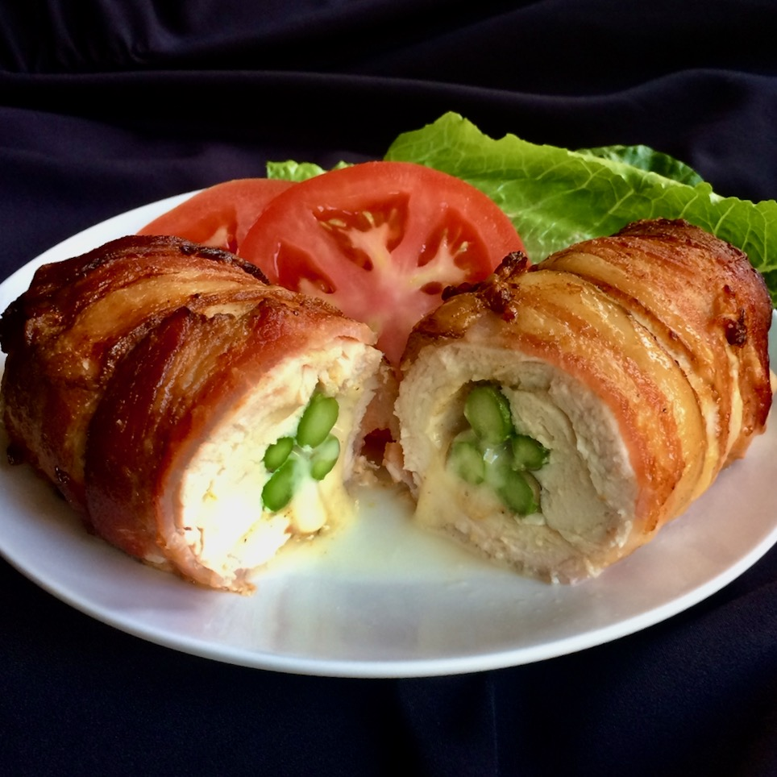

Bacon-Wrapped Stuffed Chicken Breasts in the Air Fryer
Boneless, skinless chicken breast, again? Amp up the flavor of your chicken with bacon! These are butterflied: either do it yourself or ask your butcher to do it for you. You can then stuff them with cheese and asparagus, wrap them up in a bacon blanket, and air fry! While they cook, toss a green salad, add a veggie or potato, and some bread, and you'll be enjoying your dinner in no time.
Cooking Time:
- Cook: 30 mins
- Total: 45 mins
- Prep: 15 mins
- Servings: 3
- Yield: 3 stuffed chicken breasts
Ingredients:
- 3 breast half, bone and skin removed (blank)s skinless, boneless chicken breasts
- 1 teaspoon lemon-pepper seasoning, or to taste
- 3 slices Monterey Jack cheese
- 6 spears fresh asparagus
- 9 slices bacon /li>
- 12 each wooden toothpicks
Directions:
- Preheat the air fryer to 350 degrees F (175 degrees C) if recommended by manufacturer.
- Pat chicken pieces dry with paper towels. Use a sharp knife slice horizontally through the middle, beginning at the thickest part, being careful not to cut all the way through to the other side. Open the 2 sides and spread them out like an open book.
- Season both sides with lemon-pepper seasoning. Place 1 slice of cheese on each chicken breast. Cut asparagus spears in half and place 4 halves on top of the cheese. Roll the chicken up and over the cheese and asparagus, keeping the stuffing inside each roll. Wrap each chicken breast with 3 pieces of bacon, using wooden toothpicks to secure the bacon, where it overlaps.
- Place each bacon-wrapped breast in the air fryer basket and air fry for 15 minutes. Turn and cook for 15 minutes more. Test chicken for doneness; an instant-read thermometer inserted into the center should reach 165 degrees F (74 degrees C).